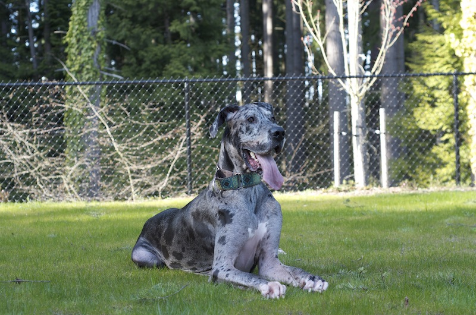

In-home Private Training
In-home training is a great option for those with busy schedules who can’t commit to weekly classes. Your dog will learn in their environment with the whole family and you get to avoid the traffic!
Daytime, evening, and weekend hours available.
New Puppy Fundamentals
(8 weeks to 5 months)
Bringing home a new puppy can be overwhelming! Topics can include potty and crate training, nipping, chewing, socialization, and basic obedience.
$80 per hour or 4 hours for $300
Adult Dog Basic Obedience
(5 months +)
Need help getting your dog to listen better? This is a perfect option to get specific help with the basics. Topics include; loose leash walking, no jumping, coming when called, door dashing and more! This is meant for dogs without fear, anxiety, reactivity or aggression issues.
$90 per hour or 4 hours for $340
In-home Behavioral Modification
Have a nervous, fearful, reactive or anxiety ridden dog? Topics include; leash reactivity, excessive barking, phobias, resource guarding, and aggression.
$100 per hour or 4 hours for $380
Breed and Breeder/Rescue Selection
Need helping choosing the right dog for your active or relaxed lifestyle? I can help you choose the right dog for your family, research responsible, reputable breeders, or help you find a well-matched rescue dog.
$45 for initial consultation and subsequent research
Additional cost for temperament testing. Please email for further details.
Areas include: Kirkland, Bellevue, Woodinville, and Redmond. Additional areas are covered for an additional travel cost.
All prices include free e-mail and phone support!
For any questions or requests, please call: 425.780.5734. Or email us: mallory@greydogtraining.com
About Mallory
Certified Professional Dog Trainer – Knowledge Assessed
Professional Member of APDT
Member of Puget Sound Positive Trainers
AKC Canine Good Citizen Evaluator
Mallory is a graduate from WSU with a B.A. in Social Science. She started training dogs in 2008 after a move across town prompted her to explore a job with her new found love: dogs. She applied for a position at PetSmart where she was recognized for her outgoing personality and experience at training people. After passing an extensive test, Mallory was sent to a different store to learn under a veteran Area Trainer for Petsmart, Karen Simchak. Karen is a crossover trainer, who once used punishment-based methods to train her Belgian Shepherds, but after attending one of the first clicker training seminars, she was hooked on positive reinforcement training, and she passed that passion to Mallory.
Mallory completed the accreditation process with flying colors and began teaching classes with her new Great Dane puppy, Gatsby. Gatsby flourished with clicker training and could perform difficult behaviors with high distractions. However, working with a puppy in a retail setting did not come without its challenges. Gatsby was often subjected to people who greeted him inappropriately, or surrounded him at all angles. People frequently wanted their little dog to “meet” her big dog, despite the fact that their dog was feeling very differently. Once, a small child unexpectedly jumped on Gatsby’s back and kicked him in the side. Mallory found it difficult to provide Gatsby the comfort and space he needed without being rude to customers, so she decided to retire him as her demo dog.
However, the damage had been done. Gatsby was incredibly terrified of small children and became reactive towards dogs. Her once picture-perfect canine companion struggled just walking down the street. Mallory furthered her knowledge on how to train dogs with difficult behavioral issues, learning from the experts for some understanding and information. She was able to help Gatsby become acclimated with children and other dogs through controlling his environment, counter conditioning, and confidence building exercises. She welcomed the opportunity to take the more difficult cases at PetSmart and sought to help those feeling lost about how to help their dogs.
Mallory now teaches group classes at Seattle Humane Society and offers private in-home training. She is a member of Puget Sound Positive Trainers, a Professional Member of APDT, an AKC CGC Evaluator, and has completed her CPDT-KA title.
Mallory shares her home with her very patient boyfriend, Brian, and their two Great Danes, Gatsby and Gwinnie.
Philosophy
Reward Based Training
I use positive-based methods to train dogs. I show dogs how to behave in different situations and environments through teaching, not punishing. When you reward a dog for behavior you like, they will begin to offer that behavior to you regularly.
Rewards can come in many different forms, but primarily take the form of food or games. Traditional styles of training relied heavily on the use of force, fear, and sometimes pain, to get dogs to “behave”. These methods are not only outdated and less effective, but are often detrimental to the bond you share with your dog.
Clickers are a useful tool in helping you communicate with your dog. It’s the only tool available that specifically ‘marks’ good behavior for your dog to understand. Basically, it bridges the moment your dog does something right, with the reward they’ll be receiving. It helps pinpoint precise behavior and is an effective way of teaching. I don’t use clickers in every situation, or with every dog. However, it’s still necessary to ‘mark’ good behavior (with a word, light, or touch) to help the learning process.
This is easily the biggest concern I hear from clients. I believe that an appropriate reward must be given in most circumstances. Rewarding good behavior is no different than you getting paid to work at your job, after all, we’re regularly asking our dogs to do a “job” for us. If you stop rewarding good behavior, that behavior will eventually deteriorate. So let’s say that your boss told you that you weren’t going to be paid for coming into work on Fridays anymore. You like your job, so you should want to work on Fridays anyway, right? Initially, you might still come to work – perhaps you’re afraid that you’ll be fired, or take another pay cut. But very shortly, you realize that there are much better things you could be doing with your time, like digging, chewing, or jumping on strangers…oh wait.
Terms like dominance, pack leader, and alpha are used regularly to make an excuse for a dog’s bad behavior. According to the American Veterinary Society of Animal Behavior (AVSAB) “People who rely on dominance theory to train their pets may need to regularly threaten them with aggressive displays or repeatedly use physical force. Conversely, pets subjected to threats or force may not offer submissive behaviors. Instead, they may react with aggression, not because they are trying to be dominant but because the human threatening them makes them afraid.” In short, using dominance based methods to train your dog will engage a “fight or flight” response. By forcing your dog to “submit” by rolling them on their back, you’ve taken away the typical “flight” behavior when confronted with fear, leaving them no option but to respond with aggression.
Links
AVSAB
http://avsabonline.org/uploads/position_statements/dominance_statement.pdf
Dr. Sophia Yin
http://drsophiayin.com/
Dr. Patricia McConnell’s Blog
http://www.patriciamcconnell.com/theotherendoftheleash
Emily Larlham Training Videos
http://www.youtube.com/user/kikopup
Certification Council for Professional Dog Trainers
http://www.ccpdt.org/
Puget Sound Positive Trainers
http://www.seattledogtraining.com/
Association of Professional Dog Training
http://www.apdt.com